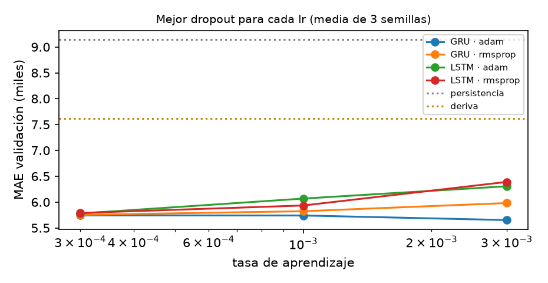

Repositorio: github.com/dsiriarte/Tecnicas-Avanzadas-de-Modelado-en-IA/tree/main/Unidad 4. Contiene el notebook ejecutado, los datos agregados, los pesos entrenados, el registro MLflow, las dependencias y las instrucciones de ejecución.
Resumen. Pronosticamos la actividad de Internet de Milán en el siguiente intervalo de 10 minutos con datos del Telecom Italia Big Data Challenge: 39 millones de registros de la semana del 4 al 10 de noviembre de 2013, agregados en 1.008 intervalos. Con una partición cronológica fija comparamos 147 redes LSTM y GRU, entrenadas en tres rondas de experimentos con tres semillas, frente a cinco líneas base. En la primera versión, la red predecía el nivel de la serie y no superó a la persistencia en prueba (MAE 9.906 frente a 9.230). Cambiamos el objetivo para que la red prediga el cambio respecto al último valor, agregamos la hora del día como entrada y ajustamos de forma sistemática la tasa de aprendizaje, el dropout y el optimizador. La GRU elegida en validación obtuvo en prueba un MAE de 5.835: 36,8 % menos que la persistencia (IC 95 % [−5.503; −902]; Diebold-Mariano, p < 0,001) y 12,7 % menos que una regresión Ridge con las mismas entradas (p < 0,001). Frente a la deriva, que repite el último cambio, la mejora de 12,8 % no es significativa (p = 0,06). La red gana sobre todo cuando la actividad sube o baja de forma sostenida, y sobrestima la actividad del domingo porque solo vio días laborales al entrenar.
Palabras clave: series de tiempo, GRU, LSTM, pronóstico de tráfico móvil, líneas base, Diebold-Mariano, reproducibilidad.
Los operadores de telefonía móvil ajustan la capacidad de la red, programan mantenimientos y encienden o apagan recursos de radio según la demanda esperada. Un buen pronóstico de corto plazo ayuda a anticipar picos y a detectar fallas, porque una caída inesperada frente a lo previsto puede indicar un problema. El horizonte de 10 minutos es difícil para un modelo complejo: en ese lapso la serie cambia poco, y repetir el último valor (persistencia) ya da un pronóstico bastante bueno.
Pregunta de investigación. ¿Una red recurrente (LSTM o GRU) reduce el error de pronóstico a 10 minutos de la actividad de Internet de Milán frente a líneas base sencillas, evaluadas sobre la misma partición cronológica?
Hipótesis. La red puede aprovechar dos regularidades que la persistencia ignora: la inercia de la serie y su relación con la hora del día. Contrastamos esta hipótesis con una prueba estadística.
Las redes recurrentes procesan una secuencia paso a paso y mantienen un estado interno que resume lo visto (Goodfellow et al., 2016, cap. 10). La LSTM controla ese estado con compuertas de entrada, olvido y salida; la GRU usa solo compuertas de actualización y reinicio, y por eso tiene menos parámetros. Las dos son adecuadas para ventanas cortas de una serie con dependencia temporal fuerte.
Fuente y licencia. Usamos el conjunto SMS, Call, Internet - MI del Telecom Italia Big Data Challenge (Barlacchi et al., 2015), publicado con licencia Open Database License (ODbL). Divide Milán en una cuadrícula de 10.000 celdas y registra cada 10 minutos, por celda y por código de país, la actividad de SMS, llamadas e Internet. La ficha de datos completa está en el anexo B.
Agregación y auditoría. Los siete archivos diarios (4 al 10 de noviembre de 2013) suman 39.015.462 filas, y el 49,7 % no tiene valor en la columna internet. Para cada marca de 10 minutos sumamos esa columna en todas las celdas y países (internet_sum) y contamos los registros con valor (observations). No reemplazamos los vacíos por cero, porque una fila sin valor no significa que no hubo tráfico. La serie resultante tiene 1.008 intervalos sin huecos, desde las 00:00 del lunes 4 hasta las 23:50 del domingo 10, en hora local (UTC+1). internet_sum es un índice de actividad definido por el proveedor; no mide bytes ni usuarios.
Exploración. La serie tiene un ciclo diario claro, con un mínimo cercano a 330 mil en la madrugada, un máximo de 1,06 millones y una mediana de 806 mil. El cambio entre intervalos seguidos es pequeño (mediana de |Δy| = 8.462) y persistente: su autocorrelación en el rezago 1 es 0,67, es decir, cuando la actividad sube suele seguir subiendo. La actividad está muy correlacionada con la cobertura (r = 0,88), así que el índice también refleja cuántas celdas reportan datos en cada intervalo. El fin de semana hay menos actividad: el nivel medio es 771 mil en días laborales, 680 mil el sábado y 642 mil el domingo.
Partimos la serie en orden cronológico (70/15/15), con cortes en los intervalos 705 y 856, los mismos del avance. Con ventanas de 12 pasos (2 horas) quedan 693 ventanas de entrenamiento (lunes 02:00 a viernes 21:20), 151 de validación (viernes 21:30 a sábado 22:30) y 152 de prueba (sábado 22:40 a domingo 23:50). Una ventana puede usar observaciones anteriores al corte, pero ningún objetivo aparece en dos particiones, y un assert del notebook lo verifica. Los dos escaladores (nivel y cambio) se ajustan solo con datos de entrenamiento. No usamos validación cruzada con mezcla aleatoria, porque con series de tiempo eso deja pasar información del futuro al entrenamiento (Scikit-learn Developers, s. f.).
Evaluamos todas las líneas base sobre las mismas ventanas:
La red final tiene 3.681 parámetros (3.648 en la GRU y 33 en la capa de salida), unos 5 por ventana de entrenamiento. Usamos pocas unidades porque el conjunto de datos es pequeño. La hora se codifica con seno y coseno para que 23:50 y 00:00 queden cerca. La red predice el cambio y no el nivel, porque la desviación del cambio es 15 veces menor (16.524 frente a 251.097); con este objetivo, la persistencia equivale a predecir un cambio de cero. Entrenamos con la pérdida MSE y reportamos el MAE, que se expresa en las mismas unidades de la serie y es menos sensible que el RMSE a picos aislados. Todas las redes tienen el mismo presupuesto: hasta 150 épocas, lote de 32, EarlyStopping (paciencia 15, recupera los mejores pesos) y ReduceLROnPlateau (factor 0,5, paciencia 6) sobre la pérdida de validación.
Seguimos el enfoque científico de ajuste de Google Developers (s. f.). La celda (LSTM o GRU) y el objetivo son los factores científicos, es decir, los que queremos comparar. La tasa de aprendizaje, el dropout y el optimizador son factores de ruido: los ajustamos para cada celda antes de compararlas, para no favorecer a ninguna con una mala elección de hiperparámetros.
Cada configuración se entrena con las semillas 42, 7 y 2026 y con enable_op_determinism. La regla de selección se fijó antes de entrenar: gana el menor MAE medio de validación. MLflow Tracking (MLflow Project, s. f.) guarda cada corrida con sus parámetros, métricas, pérdidas por época y artefactos, y salidas/experimentos.csv conserva una copia.
Evaluamos la prueba una sola vez, con la configuración ya fija, y reportamos MAE, RMSE, MAPE y sesgo. Para comparar dos modelos usamos la diferencia del error absoluto en cada ventana, dt = |ered,t| − |ebase,t|, cuyo promedio es la diferencia de MAE. Calculamos su IC 95 % con bootstrap de bloques móviles (bloques de 12 pasos, 5.000 réplicas), que respeta la autocorrelación de los errores. También aplicamos la prueba de Diebold y Mariano (1995), DM = d̄ / √(V̂NW/n), con varianza de Newey-West de 5 rezagos y la corrección de Harvey, Leybourne y Newbold para muestras pequeñas. Solo afirmamos que un modelo es mejor si el intervalo excluye el cero y p < 0,05.
| Fase | Qué hicimos | Evidencia en el repositorio |
|---|---|---|
| Problema y datos | Definimos el horizonte (10 min), la variable y el alcance; auditamos los 7 archivos y agregamos la serie. | datos/milan_data_audit.json, CSV con SHA-256 |
| Línea base | Persistencia como referencia; después deriva, media de ventana, ingenuo diario y Ridge sobre las mismas ventanas. | Notebook, sección 3 |
| Primera versión (avance) | LSTM y GRU con objetivo de nivel, una semilla y cinco configuraciones. En prueba, E5 tuvo MAE 9.906, peor que la persistencia. | Notebook, sección 5 (ronda 1) |
| Diagnóstico | En validación, tres de cinco redes quedaron peor que la persistencia y los resultados variaban mucho entre semillas. | Notebook, sección 5 |
| Segunda versión | Ronda 2 (objetivo y entradas) y ronda 3 (malla de 36 configuraciones), con tres semillas y selección en validación. | mlruns/, salidas/experimentos.csv |
| Evaluación | Una evaluación en prueba, contrastes pareados, análisis de errores y costos. | salidas/comparacion_prueba.csv, contrastes_prueba.csv |
| Cierre | Pesos, metadatos, fichas del modelo y de los datos, dependencias y verificación al recargar los pesos. | modelos/, anexos A y B, requirements_u4.txt |
| Ronda y factor | Configuración | MAE val. | DE | vs. persistencia |
|---|---|---|---|---|
| Líneas base en validación: persistencia 9.147 · deriva 7.612 · Ridge 5.875 · media de ventana 48.485 · ingenuo diario 100.813 | ||||
| R1 · referencia | E1 LSTM, Adam, lr 0,001, p 0,2 (nivel) | 10.703 | 1.682 | +17,0 % |
| R1 · solo lr | E2 lr 0,0005 | 12.194 | 1.209 | +33,3 % |
| R1 · solo dropout | E3 p 0,3 | 10.669 | 730 | +16,6 % |
| R1 · solo celda | E4 GRU | 6.727 | 740 | −26,5 % |
| R1 · solo optimizador | E5 RMSprop | 7.484 | 581 | −18,2 % |
| R2 · objetivo | GRU, cambio, entrada nivel | 6.366 | 51 | −30,4 % |
| R2 · objetivo y entradas | GRU, cambio, nivel + cambio + hora | 5.844 | 299 | −36,1 % |
| R2 · solo entradas | GRU, nivel, nivel + cambio + hora | 30.153 | 10.888 | +229,7 % |
| R3 · mejor LSTM | Adam, lr 0,0003, p 0 | 5.780 | 280 | −36,8 % |
| R3 · mejor GRU (seleccionada) | Adam, lr 0,003, p 0,4 | 5.653 | 148 | −38,2 % |
Tabla 1. MAE de validación (media de 3 semillas) y desviación estándar entre semillas.

En la ronda 3, el MAE medio fue 5.861, 5.981 y 6.249 con tasas de aprendizaje de 0,0003, 0,001 y 0,003; 6.117, 6.038 y 5.937 con dropout de 0, 0,2 y 0,4; 6.018 con Adam y 6.043 con RMSprop; y 5.918 con GRU frente a 6.143 con LSTM. Las cinco mejores configuraciones quedaron entre 5.653 y 5.760. Al promediar las tres semillas de la configuración elegida, el MAE de validación bajó de 5.653 a 5.599, así que adoptamos ese promedio como modelo final.

Con el objetivo de nivel (E4), la pérdida de entrenamiento queda unas 12 veces por encima de la de validación. La mejor época varía entre 22 y 53 según la semilla, y la tasa de aprendizaje termina entre 1,6e-05 y 1,3e-04. Con el objetivo de cambio, la pérdida de validación llega a su mínimo en la época 2 con las tres semillas; luego la de entrenamiento sigue bajando y la de validación sube, hasta que el entrenamiento se detiene en la época 17. La pérdida de validación queda por debajo de la de entrenamiento (cociente 0,41-0,47). La varianza del cambio real en validación es el 48 % de la de entrenamiento (desviación de 11.433 frente a 16.505). Medido sin dropout y con los pesos recuperados, el R² del cambio de la GRU es 0,64 en entrenamiento y 0,60 en validación; el de E4 es 0,30 y 0,45. Con lr = 0,0003, la misma red llega a su mínimo entre las épocas 5 y 15 y obtiene un MAE de 5.744.

| Modelo (domingo) | MAE | RMSE | MAPE | vs. persist. |
|---|---|---|---|---|
| Persistencia | 9.230 | 11.584 | 1,6 % | — |
| Deriva | 6.687 | 8.944 | 1,0 % | −27,5 % |
| Media de ventana | 48.978 | 60.887 | 8,7 % | +430,6 % |
| Ingenuo diario | 44.226 | 58.200 | 7,5 % | +379,2 % |
| Ridge (cambio) | 6.687 | 8.306 | 1,1 % | −27,6 % |
| Avance: E5 LSTM (nivel) | 9.906 | 12.882 | — | +7,3 % |
| R1: E4 GRU (nivel) | 7.370 | 10.194 | 1,1 % | −20,2 % |
| Mejor LSTM (R3) | 6.022 | 7.667 | 1,0 % | −34,8 % |
| GRU seleccionada | 5.835 | 7.364 | 1,0 % | −36,8 % |
| GRU frente a | ΔMAE | IC 95 % | p (DM) | gana |
|---|---|---|---|---|
| Persistencia | −3.395 | [−5.503; −902] | < 0,001 | 69 % |
| Ridge (cambio) | −852 | [−1.453; −508] | < 0,001 | 70 % |
| Deriva | −853 | [−1.687; +205] | 0,06 | 52 % |
| E4 de la ronda 1 | −1.535 | [−3.233; +40] | 0,05 | 55 % |
Tabla 2 (izquierda). Métricas en las 152 ventanas de prueba. La fila del avance viene de su notebook original (una semilla y otro protocolo de entrenamiento). Tabla 3 (derecha). Contrastes pareados; «gana» es el porcentaje de ventanas en que la GRU tiene menor error absoluto. Las tres semillas de la GRU dan MAE de 5.560, 5.645 y 6.420 (5.875 ± 474).

| Subgrupo de prueba | GRU | Persistencia | Deriva |
|---|---|---|---|
| Tercil estable del cambio real | 5.213 | 2.514 | 5.674 |
| Tercil medio | 5.180 | 7.935 | 6.258 |
| Tercil de rampa | 7.098 | 17.215 | 8.121 |
| Madrugada, 0-6 h | 3.883 | 9.815 | 4.303 |
| Mediodía, 12-15 h | 6.899 | 5.841 | 6.827 |
| Noche, 21-24 h | 7.058 | 11.784 | 10.260 |
Tabla 4. MAE por subgrupo. Sesgo medio (real − pronóstico): GRU −2.633; persistencia −1.066. Percentil 95 del error absoluto: 13.872 frente a 21.839. Ljung-Box sobre los residuos de la GRU: p = 0,79, 0,28 y 0,21 en los rezagos 1, 6 y 12. Correlación entre el error absoluto y la cobertura: 0,19.
Con el objetivo de nivel, tres de las cinco configuraciones del avance quedaron peor que la persistencia en validación, y la desviación entre semillas llegó a 1.682. Para acertar un cambio cercano a 8 mil, la red tenía que reproducir un valor de unos 800 mil, y cualquier error en el nivel pesaba más que el cambio mismo. Las curvas lo muestran: el dropout altera un estado que representa ese nivel, y la pérdida de entrenamiento queda 12 veces por encima de la de validación. Cuando la red predice el cambio, parte de la persistencia y solo aprende la corrección. Por eso mejoran todas las celdas y la desviación entre semillas baja a 51-120.
Con el objetivo de nivel, la red aprende el perfil de lunes a viernes y falla el sábado, que tiene otro nivel (MAE 30.153). Con el objetivo de cambio, aprende a qué horas suele subir o bajar la actividad. Esa regularidad se mantiene mejor de un día a otro, y el MAE baja de 6.366 a 5.844.
Con 693 ventanas, el principal riesgo es el sobreajuste. El error bajó al subir el dropout, Ridge eligió el α más alto y la pérdida de validación llegó a su mínimo en la época 2. Interpretamos esa época temprana como un sobreajuste rápido que la parada temprana controla, y no como falta de entrenamiento, por dos razones. Primero, después de la época 2 la pérdida de validación sube mientras la de entrenamiento baja. Segundo, la diferencia entre ambas curvas se explica por el dropout y por la menor varianza del cambio en validación (cociente 0,48): sin dropout, el R² del cambio es casi igual en las dos particiones (0,64 y 0,60). La versión con lr = 0,0003 llega al mismo error con curvas más suaves, y las cinco mejores configuraciones están dentro de la variación entre semillas. Lo que se mantiene es la combinación GRU, dropout 0,4 y objetivo de cambio, más que un valor exacto de la tasa.
La mejora frente a la persistencia (−36,8 %) es grande, se repite con las tres semillas y es significativa. Frente a Ridge, la ventaja de 12,7 % muestra que la parte no lineal de la red aporta algo más que el cambio de objetivo. Frente a la deriva, en cambio, la mejora de 12,8 % no es significativa con un solo día de prueba: la red gana en el 52 % de las ventanas y pierde cuando la serie está estable. La deriva, sin entrenamiento, ya logra la mayor parte de la mejora sobre la persistencia (−27,5 %), y la red agrega unos 9 puntos porcentuales más. El MAE de validación (5.599) y el de prueba (5.835) difieren en 4 %, así que la selección no quedó ajustada a la validación.
La red gana cuando la actividad sube o baja de forma sostenida (madrugada y caída nocturna) y pierde cuando la serie está estable, porque ahí la persistencia acierta casi siempre. El sesgo negativo del domingo tiene una explicación directa: el modelo solo vio días laborales y el domingo tiene 17 % menos actividad. Los residuos no tienen autocorrelación, así que lo que falta no está en la ventana de 2 horas sino en variables que el modelo no recibe, como el día de la semana o la cobertura.
TimeSeriesSplit) para estimar la variación entre días; y entregar intervalos de predicción, no solo un valor.Construimos un pipeline reproducible de pronóstico a 10 minutos con partición cronológica, escaladores sin fuga de información, cinco líneas base, 147 redes en tres rondas controladas con tres semillas y registro completo en MLflow. La primera versión, que predecía el nivel, no superó a la persistencia en prueba. El análisis en validación mostró por qué, y el cambio de objetivo resolvió el problema. La GRU final reduce el MAE de prueba en 36,8 % frente a la persistencia y en 12,7 % frente a Ridge, con significancia estadística. Frente a la deriva, la mejora de 12,8 % no es significativa con un solo día de prueba, por lo que no afirmamos que la red sea mejor que esa regla. La red aporta sobre todo cuando la actividad sube o baja con fuerza. Su principal debilidad es el sesgo del fin de semana, que solo se puede corregir con más semanas de datos y con el calendario como entrada.
El repositorio contiene notebooks/U4_pronostico_internet_milan.ipynb (ejecutado); datos/, con el CSV, cuyo SHA-256 se verifica al cargarlo, y la auditoría de los archivos originales; modelos/, con los tres .keras de la GRU final y metadatos_modelo_final.json (configuración, escaladores, métricas y versiones); salidas/, con figuras y tablas; mlruns/, con el registro MLflow; y requirements_u4.txt. El notebook no usa rutas absolutas y corre completo en unos 6 minutos en CPU; en Colab, si no encuentra el CSV, lo descarga del repositorio. La última celda recarga los pesos guardados y verifica que reproducen el pronóstico reportado (diferencia máxima de 0,0000). Versiones: Python 3.12.11, TensorFlow 2.21.0, Keras 3.15.1, scikit-learn 1.9.1, pandas 3.0.5, NumPy 2.5.3 y MLflow 3.17.2.
python -m pip install -r requirements_u4.txt jupyter nbconvert --to notebook --execute --inplace notebooks/U4_pronostico_internet_milan.ipynb
Barlacchi, G., De Nadai, M., Larcher, R., Casella, A., Chitic, C., Torrisi, G., Antonelli, F., Vespignani, A., Pentland, A., & Lepri, B. (2015). A multi-source dataset of urban life in the city of Milan and the Province of Trentino. Scientific Data, 2, 150055. https://doi.org/10.1038/sdata.2015.55
Diebold, F. X., & Mariano, R. S. (1995). Comparing predictive accuracy. Journal of Business & Economic Statistics, 13(3), 253-263. https://doi.org/10.1080/07350015.1995.10524599
Gebru, T., Morgenstern, J., Vecchione, B., Vaughan, J. W., Wallach, H., Daumé III, H., & Crawford, K. (2021). Datasheets for datasets. Communications of the ACM, 64(12), 86-92. https://doi.org/10.1145/3458723
Goodfellow, I., Bengio, Y., & Courville, A. (2016). Deep learning. MIT Press. https://www.deeplearningbook.org/
Google Developers. (s. f.). A scientific approach to improving model performance. https://developers.google.com/machine-learning/guides/deep-learning-tuning-playbook/scientific
Mitchell, M., Wu, S., Zaldivar, A., Barnes, P., Vasserman, L., Hutchinson, B., Spitzer, E., Raji, I. D., & Gebru, T. (2019). Model cards for model reporting. En Proceedings of the Conference on Fairness, Accountability, and Transparency (pp. 220-229). https://research.google/pubs/model-cards-for-model-reporting/
MLflow Project. (s. f.). MLflow Tracking. https://mlflow.org/docs/latest/ml/tracking/
Scikit-learn Developers. (s. f.). Cross-validation: evaluating estimator performance. https://scikit-learn.org/stable/modules/cross_validation.html
Telecom Italia. (s. f.). The Telecom Italia Big Data Challenge. https://theodi.fbk.eu/openbigdata
Estructura según Mitchell et al. (2019).
| Detalles | Red GRU(32) seguida de Dropout(0,4) y Dense(1), con 3.681 parámetros, en TensorFlow/Keras 2.21. El pronóstico es el promedio de tres modelos entrenados con las semillas 42, 7 y 2026 (Adam, lr = 0,003, lote 32, MSE, parada temprana en la época 2). Proyecto académico del Grupo 12. Pesos: modelos/modelo_final_GRU_semilla{42,7,2026}.keras. |
|---|---|
| Uso previsto | Pronóstico a un paso (10 minutos) de la actividad de Internet agregada de Milán, como apoyo a la planificación y a la detección de anomalías. Fuera de alcance: pronósticos por celda o por usuario, horizontes largos, otras ciudades u otros periodos sin reentrenar, y decisiones automáticas sin supervisión. |
| Entradas y salida | Ventana de 12 pasos con el nivel y el cambio escalados (la media y la desviación de entrenamiento están en metadatos_modelo_final.json) y el seno y coseno de la hora local. Salida: cambio escalado; el pronóstico es yt−1 más ese cambio. |
| Factores | El desempeño cambia según el régimen (subida o bajada sostenida, o serie estable), la franja horaria y el tipo de día. Solo se evaluó en un sábado (validación) y un domingo (prueba). |
| Métricas | MAE (principal), RMSE, MAPE y sesgo. Comparación pareada con IC por bootstrap de bloques y prueba de Diebold-Mariano. |
| Datos de evaluación | Validación: 151 ventanas (viernes 21:30 a sábado 22:30). Prueba: 152 ventanas (sábado 22:40 a domingo 23:50). |
| Datos de entrenamiento | 693 ventanas, de lunes 02:00 a viernes 21:20 (4 al 8 de noviembre de 2013). |
| Resultados | Prueba: MAE 5.835, RMSE 7.364, MAPE 1,0 %. Frente a la persistencia, −36,8 % (p < 0,001); frente a Ridge, −12,7 % (p < 0,001); frente a la deriva, −12,8 % (p = 0,06, no significativo). MAE por semilla: 5.560, 5.645 y 6.420. |
| Consideraciones éticas | Datos anonimizados y agregados a nivel de ciudad, sin información personal. El riesgo principal es operativo: sobrestimación en fin de semana (sesgo de −2.633) y errores grandes en las subidas y bajadas fuertes. |
| Advertencias | Solo hay una semana de datos y no hay evidencia de estabilidad entre semanas ni en festivos. Mantener la deriva como respaldo y reentrenar con más semanas antes de cualquier uso operativo. |
Estructura según Gebru et al. (2021).
| Motivación | Telecom Italia publicó los datos en 2014 para el Big Data Challenge, con el fin de fomentar la investigación sobre la vida urbana a partir de datos de telecomunicaciones (Barlacchi et al., 2015). |
|---|---|
| Composición | Cuadrícula de 10.000 celdas de unos 235 × 235 m sobre Milán. Para cada celda, intervalo de 10 minutos y código de país: actividad de SMS entrantes y salientes, llamadas entrantes y salientes, e Internet. Usamos la semana del 4 al 10 de noviembre de 2013: 7 archivos diarios, 39.015.462 filas, 322 códigos de país y 144 marcas de tiempo por día. |
| Recolección | Registros de detalle de llamadas (CDR) de la red de Telecom Italia. La actividad es proporcional al número de eventos y el proveedor la escaló, así que no corresponde a bytes ni a usuarios. |
| Preprocesamiento propio | Suma de internet por marca de tiempo sobre todas las celdas y países, y conteo de registros con valor. El 49,7 % de las filas no tiene internet y no se imputa. La marca en milisegundos UTC se convierte a la hora local de Milán. Resultado: datos/milan_internet_aggregated.csv, 1.008 filas, SHA-256 924333a3…1484. La auditoría por archivo está en datos/milan_data_audit.json. |
| Calidad | Sin huecos temporales ni intervalos vacíos. La cobertura varía entre intervalos y está muy correlacionada con la actividad (r = 0,88). Solo hay una semana, con cinco días laborales y un fin de semana. |
| Usos | Adecuado para estudiar la dinámica de corto plazo de la actividad agregada. No es adecuado para inferir comportamientos individuales, la demanda absoluta en bytes ni patrones estacionales de largo plazo. |
| Distribución y licencia | Open Database License (ODbL). Nuestra serie agregada es una base de datos derivada y se distribuye con atribución a la fuente original. |
| Mantenimiento | El conjunto original es estático (2013). Nuestro CSV tiene versión en el repositorio, y el notebook verifica su SHA-256 antes de usarlo. |